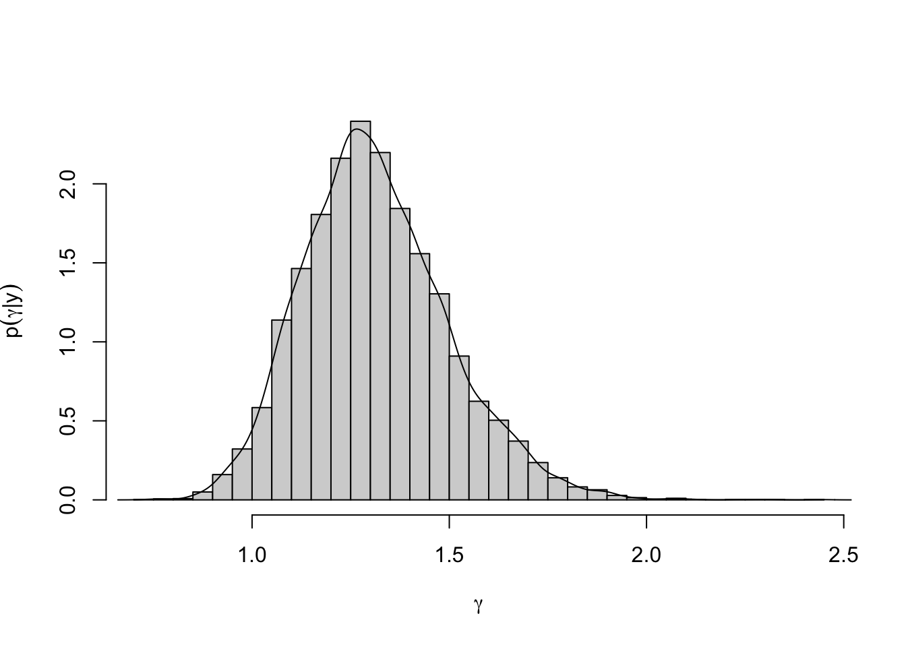

Lecture 6 Monte Carlo
The following notes, mostly transcribed from Neath(0510,2021) lecture, summarize sections(4.1 and 4.2) of Hoff(2009).
6.1 Example: birth rate
Let’s continue with the example from last time in which \(\theta_1 =\) true birthrate (children per woman) among children with no college degree (less than bachelors degree), and \(\theta_2\) is the true birthrate among women with a bachelor’s degree or higher. A birthrate of 2 would be a society with a steady population.
In our data, among those women with less than bachelors degrees there were \(n_1 = 111\) such women with a total of 217 children\((\sum y_{i,1} = 217)\), so that’s \(1.95\) children per woman. Among those women with bachelors or higher \(n_2 = 44,~ \sum{y_{i,2}} = 66\), so that’s \(1.50\) children per woman.
The prior we used was independent gamma\((2,1),\) with a prior mean of \(2\)(representing steady growth). \(b =\) prior sample size of \(1.\) The data sample sizes were \(44\) and \(111\) so the prior won’t have a lot of influence on our inference (which is usually how we want it). We are interested in the posterior probability that \(\theta_1 > \theta_2,\) \(\theta_1\) and \(\theta_2\) are independent gammas in this posterior distribution. \(Pr(\theta_1 > \theta_2 | y) = Pr( \theta_2 < \theta_1 | y) = \int{Pr(\theta_2 < \theta_1 | \theta_1, y) p(\theta_1 | y) d\theta_1}\); An application of “a law of total probability.”
Note on using R:
dgammareturns a gamma density valuepgammareturns a gamma cdf valueqgammareturns a gamma quantilergammasimulates a random draw from a gamma dist
integrand <- function(x)
{pgamma(x, 68, 45) * dgamma(x, 219, 112)}
integrate(f=integrand, lower=0, upper=Inf) ## 0.9725601 with absolute error < 6.5e-06Our posterior belief that the birthrate is lower among women with bachelors degrees is 0.973. This was cool! We got the right answer. Exact answers are cool, But this really only worked because it was such a “nice” problem. The gamma distribution is nice. Having a dimension of only 2 made it nice. Numerical integration is great in low-dimensional problems but does not work so well in high dimensional ones. Today (the subject of Chapter 4) we take up a general approach that does continue to work in high dimensional problems. This method, known as Monte Carlo approximation, is based on random sampling, and its implementation does not require a deep knowledge of calculus or numerical analysis.
6.2 The Monte Carlo method
Why is the method of Monte Carlo called Monte Carlo? It’s a resort on the French Riviera with casinos (people go gambling there). Monte Carlo was the code name for a project by allied scientists in World War II.
\(p(\theta | y_1, …, y_n)\) or just \(p(\theta | y)\) for short is the posterior density function which uniquely identifies the posterior distribution so we say \(p(\theta | y)\) defines the posterior. In the Monte Carlo method we let \(\theta^{(s)}\) (we’re using a superscript rather than subscript because we use subscripts to indicate a position in a vector parameter) be a random draw from the posterior distribution for \(s = 1, …, S\). For this to work \(S\) must be reasonably large. In statistics we have an unknown population distribution but if we observe data that are a random sample from that distribution we can use the data to make inference about the population distribution. When we do Monte Carlo approximations to a posterior probability distribution we’re doing “an inference problem within the inference problem.” If \(S\) is a big enough number a histogram of the \(\theta^{(s)}\) will be a decent representation of the probability density \(p(\theta | y).\)
\(\theta_2 \sim \text{gamma}(68,45)\) (the posterior for the birth rate among college grads in our earlier example)
# Reproduce Figure 4.1 in Hoff
par(mar=c(3,3,1,1),mgp=c(1.75,.75,0),oma=c(0,0,.5,0))
a <- 2; b <- 1; n <- 44; sum.y <- 66;
#simulating draws
theta.sim1 <- rgamma(10, a+sum.y, b+n)
theta.sim2 <- rgamma(100, a+sum.y, b+n)
theta.sim3 <- rgamma(1000, a+sum.y, b+n)
theta <- seq(.75, 2.25, .01)
p.theta <- dgamma(theta, a+sum.y, b+n)
xlim=c(.75, 2.25); ylim=c(0, 2.5)
op <- par(mfrow=c(2,3))
hist(theta.sim1, freq=F, right=F, xlim=xlim, main="",
ylim=ylim, xlab=expression(theta), ylab="density", breaks=20)
lines(theta, p.theta, lwd=2, col="gray")
hist(theta.sim2, freq=F, right=F, xlim=xlim, main="",
ylim=ylim, xlab=expression(theta), ylab="density", breaks=20)
lines(theta, p.theta, lwd=2, col="gray")
hist(theta.sim3, freq=F, right=F, xlim=xlim, main="",
ylim=ylim, xlab=expression(theta), ylab="density", breaks=20)
lines(theta, p.theta, lwd=2, col="gray")
plot(theta, p.theta, type="l", lty=1, lwd=2, col="gray",
xlim=xlim, ylim=ylim, xlab=expression(theta), ylab="density")
lines(density(theta.sim1), lty=2, lwd=2)
plot(theta, p.theta, type="l", lty=1, lwd=2, col="gray",
xlim=xlim, ylim=ylim, xlab=expression(theta), ylab="density")
lines(density(theta.sim2), lty=2, lwd=2)
plot(theta, p.theta, type="l", lty=1, lwd=2, col="gray",
xlim=xlim, ylim=ylim, xlab=expression(theta), ylab="density")
lines(density(theta.sim3), lty=2, lwd=2)Figure 6.1: Successive Monte Carlo approximations to the density of the gamma(68,45) distribution, along with the true density function for comparison.
Row 1: histogram with true density for comparison. The gray curve is the true gamma(68, 45) density
Row 2: “kernel density estimates” with true density for comparison
As Monte Carlo sample size increases the agreement between the empirical distribution of the random samples and the target distribution gets better and better. “Empirical distribution” is a fancy name for the histogram. As if the population consisted of \(S\) different values each with equal probability and those values are the simulated draws. That’s what we mean by “empirical distribution.” This is a toy problem (we know the answer).
A toy problem is the name we give to exercises where we use a method like Monte Carlo despite Monte Carlo not being necessary (the exact answer is readily available). We study the performance of a method like Monte Carlo in problems where the answer is known(i.e., toy problems) so that we have confidence in the method when applied to problems where the exact answer isn’t known (non-toy problems). The “empirical distribution approaches the target distribution” argument can be made a bit more formal by the Law of Large Numbers.
LLN: As your flip a coin more and more times the proportion of observed heads will converge to the true heads probability with probability 1. Or more generally as the sample size increases the sample mean converges to the population mean with probability 1.
As Monte Carlo sample size (number of simulations) increases i.e., as \(S \rightarrow \infty\)
- sample average converges to the posterior mean
- sample variance converges to the posterior variance
- sample proportions converge to posterior probabilities.
- The empirical distribution of \(\{\theta^{(1)},...,\theta^{(S)}\} \rightarrow p(\theta|y_1,...,y_n)\)
- A point where the proportion of \(\theta^{(s)} <\) this point is \(\alpha\) converges to the \(\alpha\)-quantile of the posterior distribution
Unlike other numerical approximations, with Monte Carlo we know “If we run the computer long enough we’ll eventually get the right answer”(i.e., desired level of precision).
6.3 Example: Numerical evaluation
Let’s keep studying this toy problem. This will demonstrate what happens when we go from 10 samples to 100 samples to 1000 samples – we get a better and better approximation to the true
(a+sum.y) / (b+n) # true posterior mean## [1] 1.511111# Monte Carlo means
c(mean(theta.sim1),mean(theta.sim2),mean(theta.sim3))## [1] 1.653986 1.522461 1.508636pgamma(1.75, a+sum.y, b+n) # Pr(theta < 1.75 | y)## [1] 0.8998286# Monte Carlo approximations
c(mean(theta.sim1 < 1.75), mean(theta.sim2 < 1.75),
mean(theta.sim3 < 1.75))## [1] 0.700 0.890 0.907# true quantile
qgamma(c(.025, .975), a+sum.y, b+n)## [1] 1.173437 1.890836# Monte Carlo quantiles
c(quantile(theta.sim1, c(.025, .975)),
quantile(theta.sim2, c(.025, .975)),
quantile(theta.sim3, c(.025, .975)))## 2.5% 97.5% 2.5% 97.5% 2.5% 97.5%
## 1.276212 2.144389 1.229435 1.923309 1.190959 1.895615We can also look at trace plot of successively better approximations to the quantity of interest
# Reproduce Figure 4.2
theta.mc <- theta.sim3
S <- length(theta.mc)
theta.bar <- cumsum(theta.mc) / (1:S) #running average
Prob.hat <- cumsum(theta.mc < 1.75) / (1:S)
quant.hat <- rep(NA, S)
for(s in 1:S)
{
quant.hat[s] <- quantile(theta.mc[1:s], .975)
}par(mar=c(3,3,1,1),mgp=c(1.75,.75,0),oma=c(0,0,.5,0))
par(mfrow=c(1,3))
plot(1:1000, theta.bar, type="l", xlab="No. samples",
ylab="cumulative mean", main="")
abline(h=(a+sum.y)/(b+n), col="gray", lwd=2)
plot(1:1000, Prob.hat, type="l", xlab="No. samples",
ylab="cumulative ecdf at 1.75", main="")
abline(h=pgamma(1.75, a+sum.y, b+n), col="gray", lwd=2)
plot(1:1000, quant.hat, type="l", xlab="No. samples",
ylab="cumulative .975-quantile", main="")
abline(h=qgamma(.975, a+sum.y, b+n), col="gray", lwd=2)Figure 6.2: Estimates of the posterior mean, Pr(theta < 1.75|y) and the 97.5% posterior quantile as a function of the number of Monte Carlo samples. Horizontal gray lines are the true values.
The behaviour of the sample quantile is weird. A couple samples push us way off and then we get back to the right thing.
6.4 Posterior inference for arbitrary functions
A cool thing about the Monte Carlo method is this; suppose I know the distribution of \(\theta,\) the posterior \(p(\theta | y)\). The quantity I’m interested in is \(\gamma = g(\theta)\) for some possibly complicated function \(g.\) Ex: If \(\theta\) is a probability \(\theta /(1 -\theta)\) is an odds \(\log( \theta / (1-\theta) ) = \text{logit}(\theta)\) is a log-odds. We may be interested in posterior inference about the log odds! Monte Carlo makes this super easy. If \(\theta^{(s)}\) is a random draw from \(p(\theta | y)\) and \(\gamma^{(s)} = g( \theta^{(s)} )\) then \(\gamma^{(s)}\) is a random draw from \(p(\gamma | y)\) the posterior of \(\gamma\) regardless of how complicated a function \(g(\theta)\) may be. This is particularly important when \(\theta\) is high dimensional. If I can simulate random draws from a probability distribution, I can learn anything I want about that probability distribution (as long as I’m patient enough to let the simulation run).
The algorithm:
- sample \(\theta^{(1)} \sim p(\theta|y_1,...,y_n)\), compute \(\gamma^{(1)} = g(\theta^{(1)})\);
- sample \(\theta^{(2)} \sim p(\theta|y_1,...,y_n)\), compute \(\gamma^{(2)} = g(\theta^{(2)})\);
- etc
- sample \(\theta^{(S)} \sim p(\theta|y_1,...,y_n)\), compute \(\gamma^{(S)} = g(\theta^{(S)})\);
with each draw sampled independently
6.5 Example: Log-odds
This is from a General Social Survey in 1998. Respondents in a General Social Survey were asked if they agreed with a Supreme Court ruling that prohibited state or local governments from requiring the reading of religious texts in public schools.
Let \(\theta =\) true proportion of population that would answer YES. Of the 860 respondents in the sample(860 trials) there were \(y=441\) successes. Given a Uniform\((0, 1)\) prior the posterior distribution of \(\theta\) is Beta\((1 + 441, 1 + 860 - 441) =\) Beta\(( 442, 420 )\). This a pretty tight posterior distribution centered around \(a/a+b= 442/862 =0.513\).
Using the Monte Carlo algorithm described above, we can obtain samples of the log-odds, \(\gamma= \log[\theta/(1−\theta)]\), from both the prior distribution and the posterior distribution of \(\gamma\).
# Example: Inference about log-odds
rm(list=ls()); set.seed(20210506);
a <- 1; b <- 1;
theta.sim.prior <- rbeta(1000, a, b)
gamma.sim.prior <- log( theta.sim.prior / (1-theta.sim.prior) )
n <- 860; y <- 441;
theta.sim.post <- rbeta(1000, a+y, b+n-y)
gamma.sim.post <- log( theta.sim.post / (1-theta.sim.post) )par(mar=c(3,3,1,1),mgp=c(1.75,.75,0),oma=c(0,0,.5,0))
par(mfrow=c(1,2))
plot(density(gamma.sim.prior), xlab=expression(gamma),
ylab=expression(p(gamma)),xlim=range(gamma.sim.prior),main="")
plot(density(gamma.sim.post), xlab=expression(gamma),
ylab=ylab, xlim=range(gamma.sim.prior),main="")
lines(density(gamma.sim.prior), col="gray")Figure 6.3: Monte Carlo approximations to the prior and posterior distributions of the log-odds.
theta.sim.prior is just runif(1000). A uniform prior is flat on [0, 1]. What sort of distribution does this imply for \(\log( \theta / (1-\theta) )\)? Well it’s centered at 0 (probability = 0.5 means odds=1 means log-odds = 0). It’s symmetric. It’s not a normal distribution but it is a roughly bell shaped curve.
What about the posterior? Well the posterior distribution of \(\theta \sim\) Beta\(( 442, 420 )\) is very tightly clustered around the value \(\theta = 0.513\) or so. So the posterior distribution of the log odds is very tightly clustered around \(0\) or just \(> 0\) or so.
Why are we doing this? We are doing this now as a toy problem to prepare ourselves for later in the course when we encounter analytically intractable and high-dimensional posterior distributions. What we’ll see in these problems is posterior moments? Posterior probabilities? Posterior quantiles? Good luck with anything other than Monte Carlo.
6.6 Example: Functions of two parameters
Returning to the birthrates example, \(\theta_1 =\) birthrate for women with less than bachelor’s \(\theta_2 =\) birthrate for women with at least a bachelor’s degree.
\(\theta_1|y_{i,j}\sim \text{gamma}(219,112)\) and \(\theta_2|y_{i,j}\sim \text{gamma}(68,45)\)
There are a variety of ways to describe our knowledge about the difference between \(\theta_1\) and \(\theta_2\). For example, we may be interested in the numerical value of \(Pr(\theta_1 > \theta_2|y_{i,j})\), or in the posterior distribution of \(\gamma = \theta_1/ \theta_2.\) Both of these quantities can be obtained with Monte Carlo sampling:
This expression: \(\frac{1}{S}\sum_{s=1}^S \mathbf{1}(\theta_1^{(s)}>\theta_2^{(s)})\) is kinda sorta similar to: #{ \(\theta^{(s)} \le c\) }\(/S\). We can say “average of indicator functions” or # { successes } divided by \(S\) mean the same thing.
# Return to the birthrates example
a <- 2; b <- 1;
n1 <- 111; sum.y1 <- 217;
n2 <- 44; sum.y2 <- 66;
theta1.sim <- rgamma(10000, a+sum.y1, b+n1)
theta2.sim <- rgamma(10000, a+sum.y2, b+n2)
mean(theta1.sim > theta2.sim) ## [1] 0.9726Our Monte Carlo approximation to \(Pr( \theta_1 > \theta_2 | y )\) is 0.9726. The “exact value” is also 0.9726. This is not typical.
Now suppose we want to do inference about the ratio \(\gamma = \theta_1/ \theta_2.\) In your 4203/5203 (probability) class you may have studied bivariate transformations of random variables where you calculate the back-transformation then solve the “Jacobian” matrix (of partial derivatives). We could solve this problem that way OR we can get an arbitrarily precise numerical approximation with no difficult math required whatsoever.
Take a random sample of : \(\theta_1^{(s)}, ~\theta_2^{(s)}\) and let \(\gamma^{(s)} = \theta_1^{(s)} / \theta_2^{(s)}\) for \(s = 1, … S.\)
gamma.sim <- theta1.sim / theta2.sim
hist(gamma.sim, freq=F, right=F, breaks=30,
xlab=expression(gamma), ylab=ylab, main = "")
lines(density(gamma.sim)) Here is the posterior distribution of \(\gamma = \theta_1 / \theta_2.\) It’s mostly \(> 1\). I show a histogram and kernel density estimate on the same axes. This is not a theoretical density curve it’s the empirical one with \(S=10000\) and it’s pretty smooth. The posterior distribution of \(\gamma = \theta_1 / \theta_2.\)
quantile( gamma.sim, c(.025, .975) )## 2.5% 97.5%
## 0.9960863 1.7111331The .025 and .975 quantiles are .996 and 1.715. I have 95% confidence that the birth rate for non-college grads is between .996 and 1.715 times that of women with college degree.
6.7 How many Monte Carlo samples are needed?
We use Monte Carlo as an approximation tool. The Monte Carlo sample size does not determine posterior uncertainty.
The posterior distribution \(p(\theta | y)\), the posterior mean \(E(\theta | y)\) and posterior variance \(\text{Var}(\theta | y)\) are what they are based on the prior distribution \(p(\theta)\), and the data we observed. If the prior distribution is “vague” and the data set is not huge, the posterior variance \(\text{Var}(\theta | y)\) will be big. If the posterior distribution is approximately normal a 95% confidence will be approximately \(E(\theta|y) \pm 2 \sqrt{ \text{Var}(\theta|y) }\), because with the normal distribution, mean \(\pm\) 2 SD’s contains 95% of the distribution. None of that has anything to do with Monte Carlo.
Monte Carlo comes in when the posterior distribution is not known analytically and we will approximate it by simulating draws from the posterior distribution and using that empirical distribution to approximate the posterior. Using Monte Carlo to approximate posteriors in Bayesian inference is “an inference problem within the inference problem.” We have uncertainty about \(\theta\) that’s measured by Var\((\theta | y)\), the posterior variance. How we use Monte Carlo is; \(E(\theta | y)\) is only our best guess for \(\theta\), it’s not the truth (it’s an estimator). What if we can’t even calculate \(E(\theta | y)\) exactly, then we will approximate it using Monte Carlo. The bigger is the Monte Carlo sample size the better will be our approximation to \(E(\theta | y)\). But the uncertainty about \(\theta\) can’t be eliminated. In the birth rate example, our data consist of 111 women without college degree 44 women with college degree 155 women total. However precisely, we can estimate \(\theta_1\) and \(\theta_2\) based on these sample sizes is what it is. We can’t improve that by increasing Monte Carlo sample size.
As to the question of: How big a Monte Carlo sample to take? One formal approach to this is; Take a big enough Monte Carlo sample size to estimate \(E(\theta | y)\) to a desired level of precision that the mean of the empirical density (the dashed curve in figure 6.1) is within epsilon of the mean of the population curve (gray curve) which is unknown. This solution is an Intro Stat problem!
Let \(S\) equal Monte Carlo sample size. In terms of Monte Carlo error, \(\bar \theta\)(the sample mean of the simulated draws) has approximately a Normal distribution because \(S\) is big. Its mean is \(E(\theta|y)\). Its variance is Var\((\theta|y)/S\). A 95% Monte Carlo CI for \(E(\theta|y)\) is \(\bar \theta \pm 2\sqrt{ \text{Var}(\theta|y) / S }\). Now suppose we want the Monte Carlo sample size big enough so that the Monte Carlo error \(|\bar \theta - E(\theta|y )|\) is < .01 with 95% confidence. Then we need \(2 \sqrt{ \text{Var}(\theta|y) / S } < .01\) (could use \(1.96 = \texttt{qnorm(0.975)}\) in place of 2). Solve \(2 \sqrt{\text{Var}(\theta|y) / S} < .01\) for \(S\). Of course the posterior variance is unknown so use an estimate in its place an estimate such as the sample variance in its place. Here the sample is !Monte Carlo sample! not the actual data!.
In general we don’t really do this. We use \(S = 1000\) or \(S = 10000\). But this is still a thing we should know about. May be the basis for a homework 2 exercise.